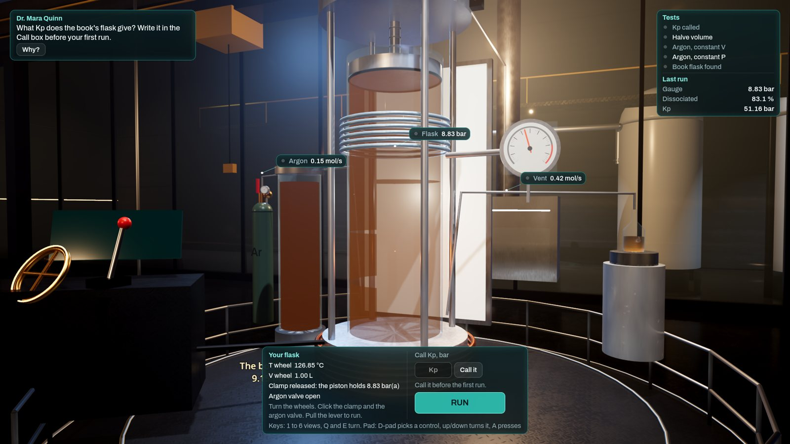
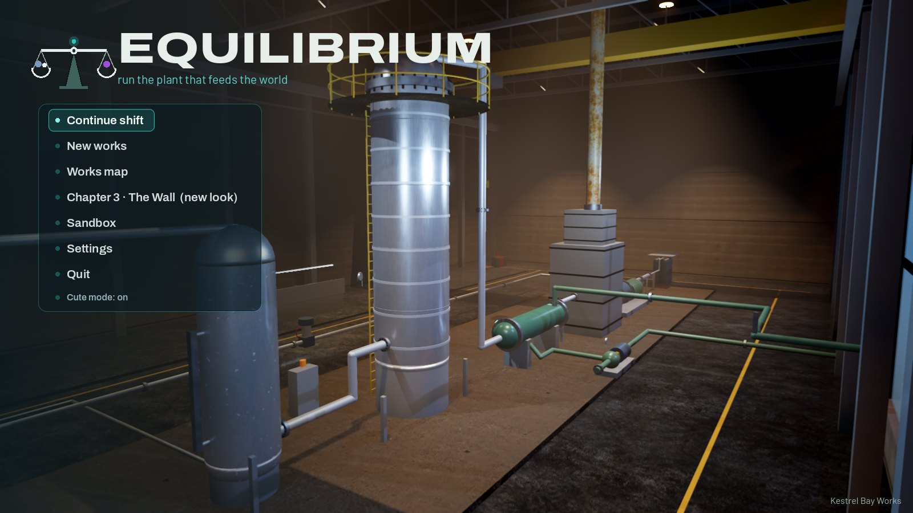
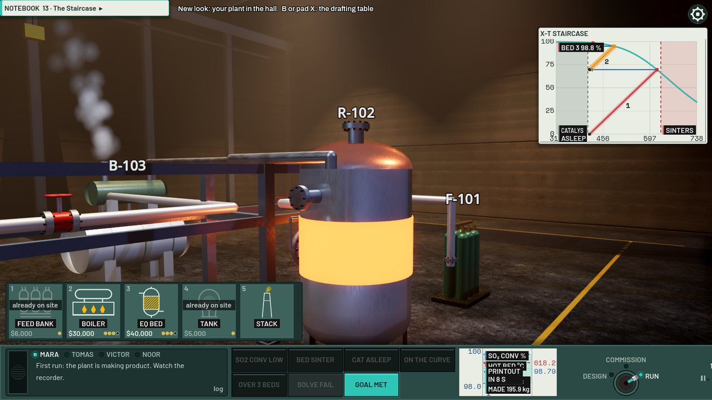
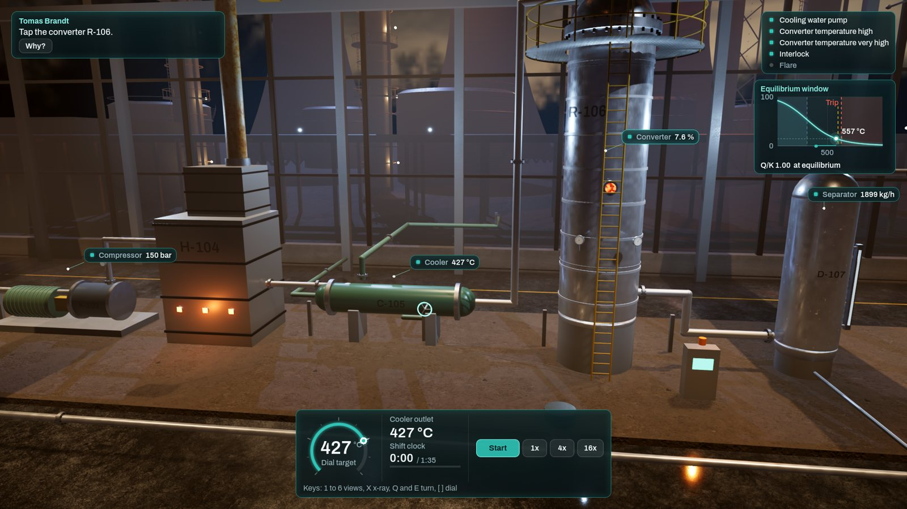
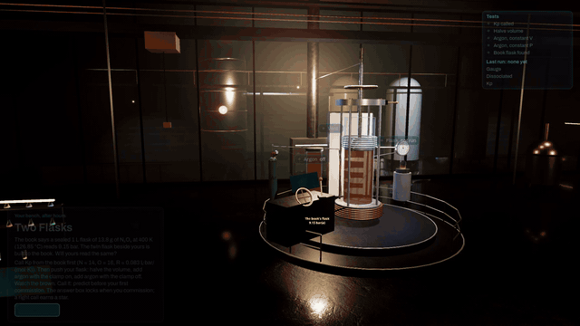
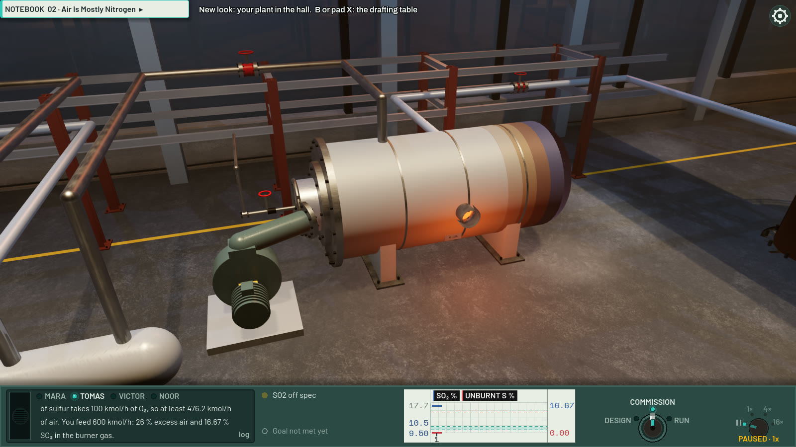
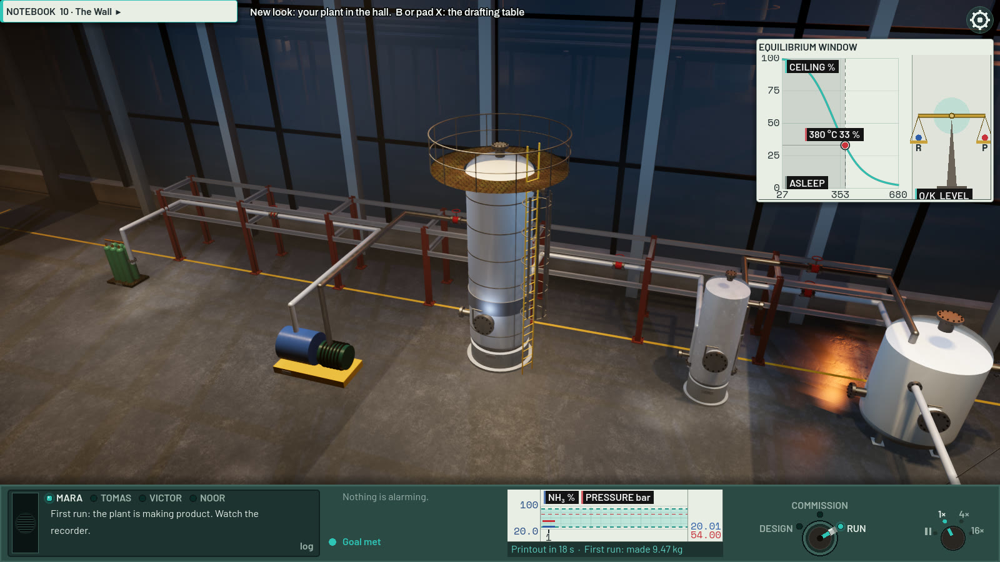
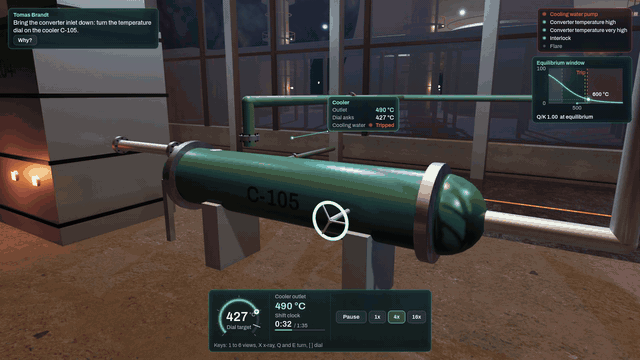

AlphaFreeNo accountLinuxWindows (untested)
EQUILIBRIUM
Run a chemical plant where the chemistry is real.
Build it, turn the key, and see if it holds.
Free. Source on GitHub.


How it plays
Build it, commission it, read what happened
-

1 Take the job
A goal with numbers and three flasks to earn. Some jobs ask you to call the answer first.
-

2 Build and commission
Place parts, pipe them, turn the key. The engine solves your plant.
-

3 Run the shift
Pumps trip and catalysts go cold. You have seconds to act.



New in 0.10
Chapter 3 in the new look
Chapter 3 and the prologue are in a 3D hall and lab. Your plant stands in the hall once it runs.
Other chapters keep the classic look. A pad works throughout the new look.
Campaign
A prologue, ten chapters and a Career





Every level in the wiki, generated from the game's own text.
Honest by design
Real data, named simplifications
- Real data. Equilibrium from NIST-JANAF tables.
- Checked. Tested against independent oracle values.
- Honest. The codex names every simplification.
Download
Free. Extract and play.
Alpha. Played on Linux. The Windows build is untested.
EQUILIBRIUM/equilibrium.sh (needs a Vulkan-capable driver)
Windowsx64 · zipUntested build: unzip, then run EQUILIBRIUM\EQUILIBRIUM.exe (unsigned: More info, Run anyway)
Latest release · SHA256SUMS.txt · All releases · Changelog